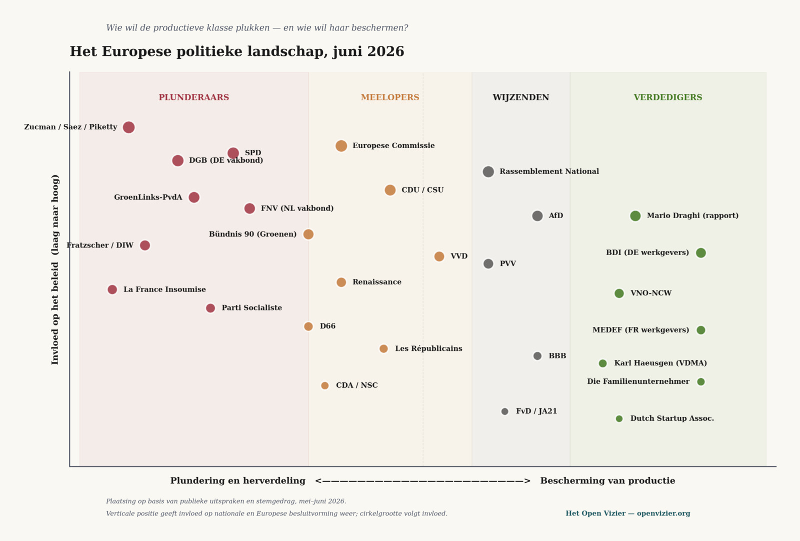

★ O Grande Saque · Parte IV
IV
O panorama político
Quem quer o quê, e porque Bruxelas não sabe como continuar
Jacobus van Merksteijn · Malta, junho de 2026

{width="6.102362204724409in" height="4.134036526684165in"}
Posicionamento com base em declarações públicas e comportamento de voto, maio–junho de 2026.
Se, nas partes anteriores, estabelecemos que escolhemos isto nós próprios, temos agora de mapear com honestidade quem exatamente escolhemos. Que partido queria o quê. Que sindicato exigiu o quê. O que gritaram os empregadores. E o que Bruxelas — pensada como o motor do continente — está neste momento a fazer com isso.
Isto não é um panfleto. É uma cartografia honesta. Porque só quando se sabe quem está de que lado da mesa se pode compreender porque é que o comboio não volta aos carris. Todos empurram um vagão diferente, e ninguém olha para a locomotiva.
Países Baixos — o pólder empurra para a esquerda
GroenLinks-PvdA
A coligação de saque mais clara. Jesse Klaver insistiu, a 4 de junho de 2026, na Segunda Câmara, literalmente num "imposto justo sobre lucros elevados e grandes patrimónios". A posição é consistente: manter o Estado social taxando mais pesadamente o topo, não pedindo à base que trabalhe mais ou tornando o sistema mais sóbrio. O partido vê o património como democraticamente suspeito, o empreendedorismo como útil enquanto for regulável, e os neerlandeses bem-sucedidos como candidatos a uma contribuição extra.
O seu eleitorado: funcionários públicos com formação superior, professores, profissionais de saúde, pessoas do setor público. Pessoas que não têm património próprio e a quem o imposto extra não afeta. É simultaneamente lógico do ponto de vista eleitoral e moralmente autossatisfatório. O que falta é qualquer análise substantiva do que acontece quando a vaca leiteira se recusa a continuar a pastar.
FNV — o sindicato
A FNV apoia ativamente este rumo. O ultimato do movimento sindical de 4 de junho de 2026 sobre os cortes orçamentais — apresentado ao governo — não é sobre trabalhar pelo que se recebe. É sobre: manter os subsídios ao nível atual, pagá-los com dinheiro dos "mais ricos de todos". Tuur Elzinga tem transmitido essa mensagem de forma consistente. O sindicato já não é, em 2026, uma organização de trabalhadores. É uma organização para proteger o contrato social como era outrora, financiado por outros. Isso é uma diferença essencial em relação à FNV de, digamos, 1985, que ainda negociava salário em troca de produtividade.
D66
Votou a favor da nova lei da caixa 3 a 12 de fevereiro de 2026. Não por convicção, mas porque o eleitorado espera isso. O D66 sobretudo não quer ser visto como associal. O partido que outrora abraçou o empreendedorismo transformou-se, em duas décadas, numa corrente progressista-burocrática que acompanha o espírito do tempo. A competitividade internacional é mencionada de vez em quando, mas nunca traduzida de forma consistente em política.
VVD
O partido que se supõe defender os empresários também votou a favor da caixa 3. Há aqui uma tragédia. O VVD perdeu, nos últimos quinze anos, a base moral para se opor ao imposto sobre o património. Ao apoiar, ele próprio, durante décadas, despesas públicas que agora são incomportáveis, o partido é corresponsável pelo problema que combate retoricamente. O resultado: uma oposição suave, com aqui e ali uma declaração corajosa de um deputado individual que ninguém cita.
CDA e NSC
Votaram igualmente a favor da caixa 3. Política de centro que se vê sobretudo como ponte e, por isso, se dobra em qualquer direção. A tradição do CDA de proteção da empresa familiar já quase não se encontra na atual geração de políticos. Pieter Omtzigt e o NSC assumiram, na campanha de 2023, a disciplina orçamental, mas sem contestar fundamentalmente o modelo de redistribuição.
PVV e BBB
Aqui torna-se interessante. Wilders diz: "os neerlandeses comuns vão pagar pelas consequências da imigração", e quer resolver o problema fechando fronteiras e negando subsídios aos migrantes durante quinze anos. É uma leitura diferente do mesmo problema, mas sem incluir a classe produtiva na análise. O BBB tem um tom agrário — o agricultor como vítima da política de Haia — mas não alarga isso à classe empresarial mais ampla.
Ambos os partidos captam a raiva que em breve será muito maior. Mas nenhum tem uma narrativa coerente sobre como se constrói riqueza produtiva. Apontam, corretamente, para os problemas. Uma solução não oferecem.
VNO-NCW e os empregadores
Aqui está o silêncio mais notável. A VNO-NCW criticou publicamente, a 22 de maio de 2026, a nova taxa da caixa 3, defendendo um imposto sobre mais-valias realizadas em vez de sobre o aumento de património. É tecnicamente o argumento correto. A Dutch Startup Association apelou literalmente à Primeira Câmara para não continuar a tramitar a lei, porque "mina a confiança no clima de investimento".
Mas o debate é travado no terreno da técnica, não do princípio. A questão de saber se o Estado neerlandês tem sequer o direito de taxar anualmente o património — uma nova forma de imposto que não incide sobre o que uma pessoa ganha, mas sobre o que construiu — não é colocada pela VNO-NCW. Demasiado politicamente incorreto. O resultado: a organização patronal perde o debate mesmo na sua forma mais defensiva, porque o seu argumento é técnico e o argumento do adversário é moral. Argumentos morais ganham sempre aos técnicos, mesmo quando estão errados.
Alemanha — a coligação rasga-se sob as suas próprias palavras
SPD
Quer aumentar o Spitzensteuersatz de 42 para 49 por cento, e apoia a ideia de um imposto sobre o património para quem possui mais de vinte milhões de euros líquidos. Marcel Fratzscher, do DIW, apresentou as contas: dois por cento de imposto sobre o património rende cerca de 42 mil milhões de euros. "O Estado poderia usar esse dinheiro para reduzir os impostos sobre o trabalho e as empresas", diz ele. Com isso, vende o imposto alemão sobre o património como se fosse líquido positivo para os empresários. Isso é academicamente inteligente e politicamente enganoso: assim que a taxa existe, a ideia de compensação desaparece sempre nos fundos gerais.
CDU e CSU
Opõem-se oficialmente ao aumento da taxa máxima de imposto e ao imposto sobre o património. Mas já há fissuras. No final de maio de 2026, os primeiros políticos da União mostraram-se "abertos a compromisso" sobre o aumento do Reichensteuersatz de 45 para 47,5 por cento. O rumo começa a dobrar-se, não porque a liderança da CDU esteja convencida, mas porque o SPD já não quer colaborar noutras reduções fiscais sem que "os ricos contribuam mais". É assim que, na política de coligação, os princípios se evaporam.
Bündnis 90/Die Grünen
Karl Haeusgen — interessante, pois é ele próprio chefe da rede empresarial dos Verdes, antigo presidente da federação alemã de construção de máquinas VDMA — defende um imposto sobre o rendimento mais alto e um imposto sucessório mais alto. É notável: um empresário de renome que, ainda assim, defende impostos mais pesados, porque acredita que "as famílias empresariais abastadas devem suportar uma carga fiscal maior". Uma autodestruição racional, alimentada pelo sentimento de culpa do alemão bem-sucedido.
AfD
Capta a raiva do outro lado. Não sobre o saque, mas sobre o que se faz com o dinheiro saqueado — sobretudo migração, apoio a requerentes de asilo, despesas climáticas. O mesmo padrão do PVV: um partido que aponta, não que constrói.
DGB — a confederação sindical alemã
Aqui torna-se duro. A 3 de junho de 2026, o vice-presidente Stefan Körzell repetiu a proposta do DGB: taxar cada euro de património acima de um milhão de euros líquidos, dois milhões para casais. Mais uma Vermögensabgabe extra de dez por cento sobre todos os patrimónios acima de dez milhões — repartida por vinte anos. Receita: 350 mil milhões. "Em vez de cortar nos trabalhadores comuns, o governo tem finalmente de enfrentar os beneficiários da distribuição desigual", disse Körzell.
A linguagem é reveladora. "Beneficiários." É assim que o sindicato alemão chama aos empresários que gerem as fábricas onde os membros do DGB trabalham. Que pagam as contribuições de pensão de que os membros do DGB esperam beneficiar daqui a vinte anos. Que fornecem o dinheiro dos impostos com que os secretários do DGB são financiados. Beneficiários de uma sociedade que, sem eles, não seria sociedade nenhuma.
BDI e Die Familienunternehmer
O lado patronal alemão. A BDI protesta contra cada nova taxa, mas com cautela. Die Familienunternehmer, a confederação alemã de empresas familiares, vai mais longe: avisa literalmente para o "substanzvernichtende Wirkung" do imposto sobre o património. Destruidor de substância. Isso é tecnicamente correto — um imposto sobre o património incidindo sobre ativos empresariais não líquidos obriga à venda ou fragmentação da empresa para poder pagar a taxa. É a forma mais cruel de dano industrial, pois chega devagar e é irreversível.
São ouvidos? Não verdadeiramente. Die Familienunternehmer é, nos media alemães, a voz do que se chama "os ricos". Os trabalhadores dessas mesmas empresas familiares são apresentados nos relatórios do DGB como vítimas do capital. A mesma empresa é dividida em dois eixos: o proprietário como beneficiário, o trabalhador como vítima. Sem atenção ao facto de que, sem o primeiro, o segundo também não existiria.
França — o campo de batalha sob pura tensão
La France Insoumise (LFI)
Mélenchon e os seus defendem o restabelecimento total do ISF — o imposto sobre o património que Macron aboliu em 2017 — mais um imposto sobre "superlucros", mais uma reforma em larga escala do imposto sucessório. O programa é consistente: SMIC para 1700 euros, reforma de volta aos 60, restabelecer o ISF, taxar dividendos como salário. É a variante de saque mais pura na Europa, apresentada sob a bandeira da justiça.
Parti Socialiste
Mais ligeiro, mas na mesma direção. Os socialistas propõem restabelecer um imposto sobre o património sobre ativos acima de cem milhões de euros — a norma Zucman, os mesmos dois por cento que estão nas urnas na Califórnia. Olivier Faure posiciona isto como alternativa "socialmente aceitável" aos 44 mil milhões de euros em cortes que o governo quer. Um enquadramento moral deliberado: escolher entre penalizar os pobres ou taxar os super-ricos. O meio-termo — nomeadamente: prometer menos, viver com mais sobriedade — não é discutido.
Rassemblement National (RN)
Marine Le Pen opôs-se sobretudo à limitação do CPF — a conta pessoal de formação — não aos impostos sobre holdings ou ao recuo do Pacte Dutreil para empresas familiares. O RN capta o desfavorecido da classe trabalhadora, mas deixa incólume, a baixo custo, o ataque ao topo produtivo. Uma posição taticamente inteligente: não defender os ricos, pois isso é eleitoralmente invendável; sim apresentar o francês comum como vítima.
Renaissance e Les Républicains
O movimento de Macron e os gaullistas travam uma luta nos bastidores. O primeiro-ministro Sébastien Lecornu apresentou, no final de maio de 2026, um recurso junto do Conseil constitutionnel para que três medidas fiscais contra "os ricos" fossem avaliadas antes de entrarem em vigor. Isso reflete a posição centro-direita: não é uma oposição de princípio a taxar mais o património, mas preocupação com a sustentabilidade jurídica. O mesmo pragmatismo que o D66 e o VVD mostram nos Países Baixos. Dobrar-se com cautela, esperando que seja menos grave do que a esquerda quer.
Medef — os empregadores franceses
Protestam, mas com cautela. A Medef perdeu, nos últimos anos, terreno sistematicamente no debate público. Patrick Martin, o atual presidente, fala em termos técnicos sobre "clima de investimento" e "competitividade". Ninguém ouve. O clima intelectual francês vê o empresário como suspeito, e isso não muda com lógica empresarial.
Os três padrões que se revelam
Quem colocar lado a lado os panoramas partidários neerlandês, alemão e francês vê três padrões que são iguais em todo o lado.
Um — a esquerda quer saquear mais, e fá-lo com clareza moral. GroenLinks-PvdA, SPD, LFI, Parti Socialiste, em parte Bündnis 90: têm uma narrativa coerente e uma base fiável. O seu enquadramento moral — "os fortes têm de contribuir mais" — é eleitoralmente robusto e culturalmente dominante. Quem se opõe a eles carrega o ónus da prova.
Dois — o centro-direita dobra-se, porque não pode ser de outra forma. VVD, CDU, Renaissance, Les Républicains: votam a favor do que combatem retoricamente. O seu problema é que apoiaram, durante décadas, o Estado social e agora não têm base moral para se opor ao seu financiamento. Perdem todos os debates porque não conseguem formular claramente porque é que taxar o património está errado, enquanto acham normal taxar o rendimento. A diferença entre os dois — taxar o lucro quando é realizado, ou taxar o património quando ainda nem sequer existe — é tecnicamente cristalina, mas moralmente impossível de explicar a um eleitorado que pensa em frases de efeito.
Três — a direita populista aponta, mas não constrói. PVV, AfD, RN, BBB, FvD: captam a raiva que o saque produz, mas dirigem-na para outro lado. Para os migrantes. Para Bruxelas. Para a "elite". Não para o saque em si. Isso é eleitoralmente lógico — os seus eleitores não têm património e não se sentem representados por uma defesa dele — mas significa que mesmo uma viragem à direita em toda a Europa não travaria o saque. Apenas mudaria o bode expiatório.
A minha opinião: O que realmente falta em toda a Europa é uma corrente política que diga o que é simplesmente verdade: o Estado social tal como o construímos já não é estruturalmente financiável a partir da produção que ainda entregamos. Temos de escolher entre produzir mais ou distribuir menos. Uma terceira opção — "fazer os ricos pagarem mais" — só existe como ficção aritmética, não como solução sustentável. Nenhum partido europeu se atreve a dizer isto. Nem a esquerda, pois isso mina o seu ponto de partida moral. Nem o centro-direita, pois isso prejudica os seus votos. Nem a direita populista, pois isso explicaria ao seu eleitorado que também tem responsabilidade. O silêncio é unânime, e por isso total.
Bruxelas — o motor gira, mas não sabe para onde ir
Acima deste palco nacional está a Comissão Europeia, que deveria oficialmente ser o motor do ressurgimento europeu. O que faz ela em junho de 2026?
A 3 de junho, a Comissão apresentou o Pacote da Primavera do Semestre Europeu de 2026. Roxana Mînzatu e Valdis Dombrovskis falaram em Bruxelas de uma "mudança importante" — competitividade medida por capital humano, competências e resiliência social. As recomendações dividem-se em quatro categorias: estabilidade fiscal, inovação, clima empresarial, energia e justiça social.
Parece razoável. Está vazio.
Leia-se as recomendações específicas aos Estados-membros e não se encontra praticamente nada de concreto sobre o que deve acontecer para proteger a classe produtiva na Europa. Há sim muita linguagem sobre "investimento em competências", "melhoria das condições de trabalho", "proteção dos níveis de vida". É retórica administrativa que pode ser preenchida em qualquer direção. Um líder sindical ouve nela medidas de solidariedade. Um empresário ouve nela desregulação. Ambos têm razão: não está lá nada de claro.
A história Draghi
Mario Draghi escreveu, em 2024, trezentas páginas de investigação para a Comissão sobre como a Europa deveria restaurar a sua competitividade. Investimentos de 800 mil milhões de euros por ano. Uma estratégia europeia de IA. Um mercado de capitais comum. Independência energética. É o trabalho mais sério que um antigo primeiro-ministro italiano e presidente do BCE alguma vez entregou.
Desses 800 mil milhões, quinze por cento foi realizado em dois anos. A Federação Bancária Europeia informou, a 10 de junho de 2026, que a "lei da competitividade" já não ascende a 800 mil milhões, mas a 1,4 biliões — quase uma duplicação, porque o problema cresceu por inatividade. O motor gira, mas em ponto morto. Ninguém se atreve a engatar a velocidade.
Porque Bruxelas não sabe como continuar
Isto não é incompetência. É um problema estrutural que as instituições europeias têm por construção.
Um — Bruxelas não pode cobrar impostos. A Comissão Europeia não tem soberania fiscal. Pode propor diretivas — como o planeado imposto mínimo europeu de saída — mas a implementação cabe aos Estados-membros. Quando a Alemanha diz: vamos aumentar o nosso imposto sobre o património, Bruxelas nada pode fazer. Quando a Itália eleva o seu regime 24-bis para 300.000 euros, Bruxelas nada pode fazer. A Comissão pode "recomendar" competitividade, mas não a pode impor.
Dois — Bruxelas calcula na linha temporal errada. A Comissão trabalha em orçamentos de sete anos (2028-2034), em planos estratégicos para 2030, em roteiros de IA para 2035. Bonito no papel. Mas o êxodo produtivo está a acontecer agora, em 2026. Os 16.500 milionários britânicos que partiram no ano passado não voltam porque a Comissão talvez coordene uma medida fiscal em 2030. Até 2034, quando o período orçamental começar, o tecido de capital europeu estará ainda mais ténue do que agora.
Três — Bruxelas está entalada entre os Estados-membros. Os grandes países — Alemanha, França, Itália, Espanha — querem mais coordenação fiscal e impostos mais altos sobre o capital. Os pequenos países — Irlanda, Países Baixos, Luxemburgo, Malta, Estónia — querem manter a soberania fiscal e espaço próprio para uma política fiscal competitiva. A Comissão não pode servir ambas as partes ao mesmo tempo e, por isso, não faz nada que faça verdadeiramente a diferença.
Quatro — Bruxelas não compreende a produção. A atual Comissão está preenchida por juristas, economistas, cientistas políticos. Nenhum engenheiro. Nenhum empresário industrial. Nenhuma pessoa que alguma vez tenha gerido uma fábrica ou vendido uma patente. O resultado é uma surdez fundamental para o que a produtividade realmente exige: espaço para o risco, energia acessível, segurança a longo prazo sobre a política fiscal, ofício transmitido de geração em geração. Bruxelas produz documentos. Documentos não produzem riqueza.
Cinco — a eurocracia deu a si própria a autopreservação como objetivo. A Comissão não está organizada para restaurar a Europa, pois a sua razão de existir está na coordenação entre Estados-membros. Quanto mais fracos os Estados-membros, mais forte Bruxelas. Uma Europa forte com Estados-membros soberanos — como sob Helmut Kohl e François Mitterrand — não precisava de Bruxelas. Uma Europa fraca, que já não consegue nada por si própria, precisa. É uma autonegação institucional falar disto em voz alta, mas é verdade.
O que isto significa
O mapa político da Europa é este, em junho de 2026. Uma ala esquerda europeia que saqueia com certeza moral. Um centro-direita que se dobra sem saber como fazer diferente. Uma direita populista que aponta sem construir. Uma instituição de Bruxelas que produz documentos, mas não produtos. Organizações patronais que protestam tecnicamente mas perdem moralmente. Sindicatos que ajudam indiretamente a minar os seus próprios trabalhadores ao declararem os empregadores inimigos.
Nenhuma destas partes consegue resolver o problema sozinha. Esse é o cerne. A classe produtiva — os empresários, os inventores, os detentores de patentes, a empresa familiar — já não tem representação política na Europa. Nem a esquerda, pois declarou-a inimiga. Nem o centro-direita, pois já não se atreve a defendê-la. Nem a direita populista, pois tem a sua atenção noutro lado. Nem Bruxelas, pois nada pode.
Está sozinha. Estatisticamente sozinha — menos de cinco por cento do corpo eleitoral europeu. Politicamente sozinha — nenhum partido se atreve a servir abertamente o seu interesse. Culturalmente sozinha — os media apresentam-na como beneficiária. Moralmente sozinha — nenhuma narrativa amplamente partilhada diz porque é valiosa para a sociedade que a saqueou.
E sem essa classe produtiva — sem as pessoas que gerem fábricas, exploram patentes, implementam inovações — não há futuro europeu. Nem daqui a cinquenta anos, nem a vinte, nem a dez.
Conclusão do quíntuplo
O comboio não está parado porque não há maquinistas. O comboio está parado porque cada maquinista empurra um vagão diferente para o lado oposto, e ninguém olha para a locomotiva.
A coligação neerlandesa dobra-se. A coligação alemã rasga-se sob as suas próprias palavras. A República Francesa combate-se a si própria no seu próprio Tribunal Constitucional. Bruxelas produz documentos dos quais quinze por cento é executado e que, entretanto, envelhecem mais depressa do que o próprio problema.
E as pessoas que criam a riqueza — nós, que nesta série chamámos "a classe produtiva", os empresários, inventores, fabricantes, empresas familiares — observam do outro lado da estação. Já fizeram as malas. Esperam pelo comboio certo. Não o comboio que não sai dos carris em Bruxelas, mas o comboio para Singapura, para o Dubai, para o Texas, para Lugano, para o Ticino.
Quando esse comboio partir, e eles estiverem lá dentro, Bruxelas nomeará um novo comissário para "combater o êxodo". Isso produzirá o 350.º relatório sobre a competitividade europeia. Esse relatório será discutido em 47 reuniões europeias. Disso, quinze por cento será executado. Quando pudesse ter mudado alguma coisa, o comboio já terá chegado a Singapura.
Fomos nós que organizámos isto assim. Mais ninguém. Votamos. Apoiamos. Desviamos o olhar. Construímos a arquitetura em que nada pode mudar.
Este é o panorama político. Quem o vê, vê também porque já não há saída dentro do sistema. A saída está fora da Europa. Para os produtivos, pelo menos. Para o resto de nós, que votámos em tudo isto, já não há saída.

Jacobus van Merksteijn
Editor-chefe de Het Open Vizier. Empresário, desenvolvedor de inovações industriais e de governança (Carbon-Alert Ltd, TerraClean Ltd, GuardSkin Ltd). Escreve sobre questões sistémicas económicas, ecológicas e políticas a partir da experiência com a máquina de decisão de Bruxelas e de Haia.